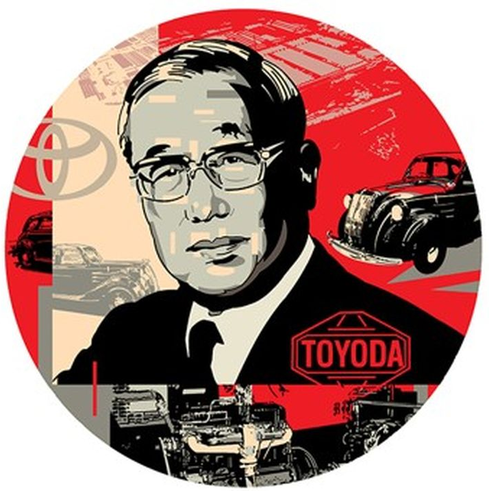
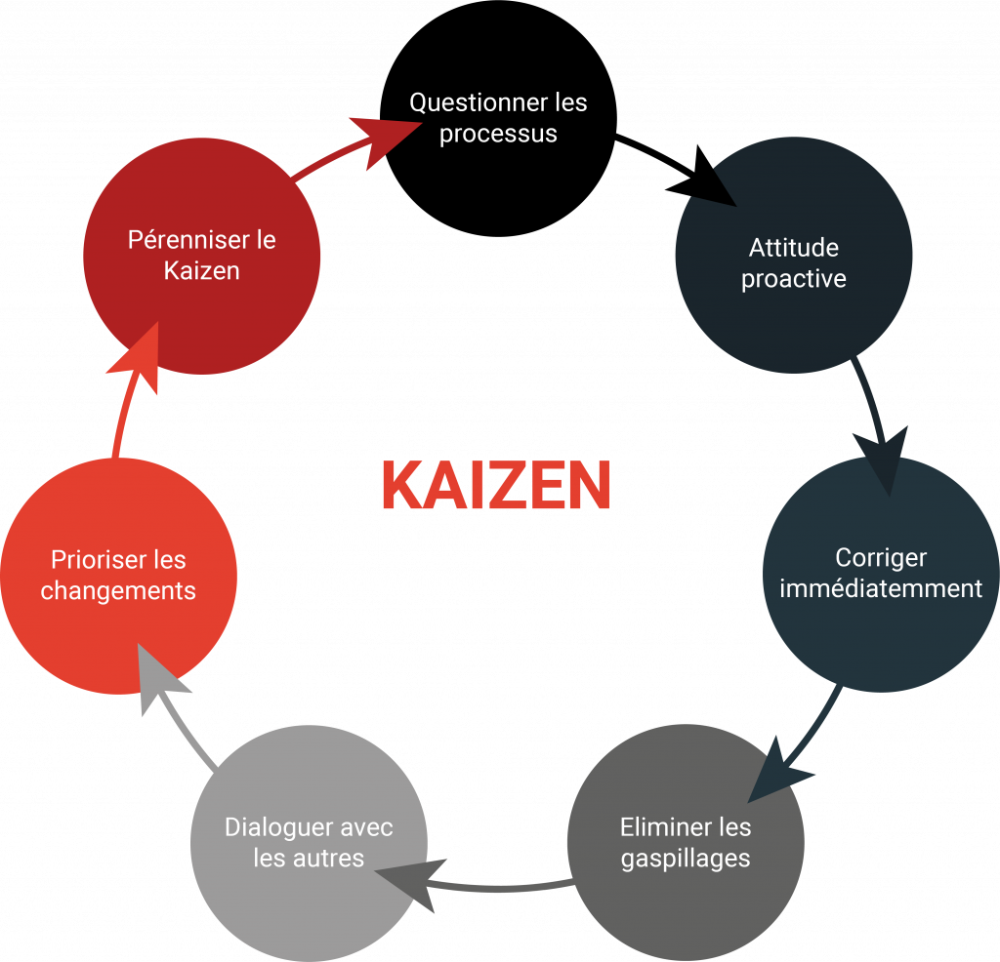

|
|
|
|
| Lean
Management |
|
|
|
|
|
|
|
|
Le « Lean management
»
est une méthode de gestion qui vise à
l’amélioration continue des
processus pour maximiser la valeur produite et réduire le
gaspillage.
Il est aussi
appelé Lean
Thinking ou Lean Enterprise.
|
|
|
|
|
 |
|
Entre
1948 et 1975, Taiichi Ohno, ingénieur chez Toyota, a
développé le Toyota Production System
(TPS),
précurseur du Lean, visant
à améliorer la production, les relations
fournisseurs-clients et
éliminer le gaspillage (muda).
Contrairement au taylorisme, le Lean prend en compte
le bien-être des
employés.
Le Lean management a été rapproché de
la gestion de projet en 1988
grâce à John Krafcik, puis popularisé
par le livre The Machine That
Changed the World.
Il a inspiré de nombreuses méthodes modernes
:Agile, Kanban, Scrum.
|
|
|
| 2. |
Les 5 principes
du Lean Management |
|
|
Les 5
principes du Lean Management sont :
|
1. Identifier la valeur :
définir ce qui est important pour le client
et les parties prenantes.
Toute activité ou processus qui ne crée pas de
valeur pour le client
est considéré comme un gaspillage (Il existe
7sources de gaspillage:
surproduction, stocks excessifs, déplacements inutiles,
défauts/rebuts,
opérations inutiles, temps d’attente, transports
inutiles, équipes
divisées).
2. Cartographier la
chaîne de valeur : visualiser toutes les
étapes du
processus pour identifier les actions sans valeur ajoutée.
3. Créer un
flux de travail continu : éviter les
interruptions et goulots
d’étranglement.
4. Instaurer une
méthode de régulation (Pull) : chaque
étape commence
seulement lorsque la précédente est
terminée, pour un processus plus
fluide (juste-à-temps).
5. Amélioration
continue (Kaizen)*: optimiser constamment les processus
et encourager la culture du feedback.
|
|
|
|
|
| 3. |
Les outils du Lean Management |
|
|
|
Il
existe une multitude d’outils du Lean Management dont voici
quelque uns.
|
|
|
|
|
Les 5S sont
une méthode japonaise pour organiser l’espace de
travail et améliorer l’efficacité.
|
• Seiri (Trier) :
éliminer ce qui n’est pas nécessaire.
•
Seiton (Ranger) : organiser le
nécessaire pour qu’il soit facile à
trouver.
•
Seiso (Nettoyer): nettoyer et maintenir la
propreté.
•
Seiketsu (Maintenir l’ordre) : standardiser
les pratiques pour maintenir l’ordre.
•
Shitsuke (Suivre) : encourager la discipline
et le respect des standards. |
|
 |
|
|
|
|
3.2. |
La
VSM (Value Stream Mapping) |
|
|
La cartographie de la
chaîne de valeur permet de
visualiser les
processus, identifier les gaspillages et améliorer le flux
de
production ou de services.
La VSM
permet de voir les activités à valeur
ajoutée et non à valeur
ajoutée et aide à identifier les
délais, les stocks inutiles et les
étapes superflues.
|
|
|
|
|
 |
|
Le « Kaizen »
est une démarche d’amélioration
continue concernant de
petites améliorations régulières et
participatives.
Il implique tous les niveaux de l’entreprise, du management
aux
opérateurs avec comme objectif de réduire les
gaspillages et améliorer
la qualité et la productivité. |
|
|
|
3.4. |
Just
in time (JIT) ou Juste à temps
|
|
|
| Just
in time (JIT) ou Juste à temps
vise à produire ou fournir seulement ce qui est
nécessaire, au
moment où c’est nécessaire en
réduisant les stocks et les coûts liés
au
stockage et en améliorant le flux de production et la
réactivité aux
besoins du client.
|
|
|
|
|
|
|
|
|
Le Kanban
est un outil visuel pour gérer le flux de
production avec des
outils sous formes de cartes ou tableaux qui indiquent
l’état des
tâches ou des stocks. Il permet de limiter le travail en
cours et
d’éviter les surproductions.
|
|
|
3.6. |
Le SMED (Single Minute Exchange of Die
|
|
|
Le SMED
permet de réduire les temps de changement
d’outils ou de
configuration en réduisant les temps
d’arrêt et augmentant la
flexibilité de production.
|
|
|
3.7. |
Le
TMP ( Total Productive Maintenance)
|
|
|
|
Le TPM
vise à maximiser la disponibilité des
équipements en faisant une
maintenance préventive et autonome net en impliquant tous
les
opérateurs dans l’entretien et
l’amélioration des machines.
|
|
|
|
|
Le Lean management
cherche à équilibrer
coût, qualité et conditions de
travail.
Il
s’applique dans tous les secteurs et s’appuie
souvent sur des
logiciels de gestion de projet, permettant de visualiser, planifier et
suivre les processus pour maximiser la valeur tout en
éliminant le
gaspillage.
|
|
|
|
|
|
|
|
|
 |